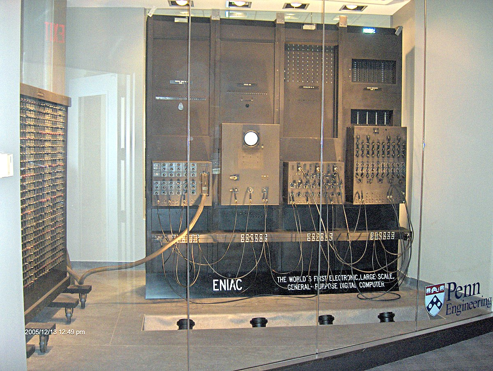

Generación de las Computadoras
Para conocer esta historia, lo primero que tenemos que saber es que la llamada “Generación de computadoras” es un término relacionado con la evolución y adaptación de la tecnología y de la informática. Básicamente cada avance importante, como la reducción del tamaño de los elementos, como así también el aumento de su capacidad y velocidad, produce un salto generacional. A principios de la década de los 80, era prácticamente imposible encontrar un hogar que tuviera una computadora. Hoy es prácticamente imposible encontrar un lugar en el mundo en donde una computadora no se encuentre realizando una tarea.
Primera generación (1940-1956)

Se caracterizaban principalmente por tener un tamaño enorme, no disponer de sistemas operativo, si no de una tarjeta perforada para almacenar todo la información y eran utilizados exclusivamente por las fuerzas militares y la industria científica.
Estas computadoras de esta generación recibían las instrucciones en lenguaje de maquina(0 y 1) o a través de señales eléctricas de encendido/Apagado, no había lenguajes de programación
Entre las computadoras de la primera generación están:
● La Zuse Z1, Z2, Z3
● ENIAC
● EDVAC
● UNIVAC I
● IBM 701
Segunda generación (1956-1964)

Esta generación se ve beneficiada con el reemplazo de las válvulas de vacío por transistores. Este invento hizo posible una nueva generación de computadoras, mas rápidas, ,as pequeñas y con menores necesidades de ventilación, sin embargo, el costo seguía siendo significativamente alto para el presupuesto de una compañía. Las computadoras se utilizaron en tareas de almacenamiento de registros, como manejo de inventarios, nómina y contabilidad.
Tercera generación (1965-1971)

El Burroughs B-2500 fue uno de los primeros. Mientras el ENIAC podía almacenar veinte números de diez dígitos, estos podían almacenar millones de números. Surgen conceptos como memoria virtual, multiprogramación y sistemas operacionales complejos. Ejemplos de esta época son el IBM 360 y el Burroughs B-3500.
En 1960 existían cerca de 5.000 ordenadores en los EUA. Es de esta época el término software. En 1964, la CSC, Computer Sciences Corporation, creada en 1959 con un capital de 100 dólares, se transformó en la primera compañía de software con acciones negociadas en bolsa. El primer mini computador comercial surgió en 1965, el PDP-5, lanzado por la americana DEC, Digital Equipament Corporation.
En 1970 INTEL Corporation introdujo en el mercado un nuevo tipo de circuito integrado: el microprocesador. El primero fue el 4004, de cuatro bits.
En 1975 Paul Allen y Bill Gates crean Microsoft y el primer software para microcomputador: una adaptación BASIC para el ALTAIR.
En 1976 Kildall establece la Digital Research Incorporation, para vender el sistema operacional CP/M.
En 1977 Jobs y Wozniak crean el microcomputador Apple, a RadioShack el TRS-80 y la Commodore el PET. La plantilla Visicalc de 1978/9, primer programa comercial, de Software Arts.
Estas computadoras eran menos costosas de compra y de operar que las computadoras grandes.
Cuarta generación (1971-1983)
Esta generación se enmarco en la miniaturización de los circuitos electrónicos y el reemplazo de las memorias con núcleos magnéticos en un clip de silicio; así como, la colocación de mas componentes en un chip. Fase característica por la integración sobre los componentes electrónicos, lo que propicio la aparición del microprocesador, único circuito integrado en el que se reúnen los elementos básicos de la máquina. Se desarrollo el “chip”.
En 1977 aparecen las primeras microcomputadoras, entre las cuales, las mas famosas fueron las fabricadas por:
Apple Computer.
Radios Shack .
Commodore Business.
IBM se integra al mercado de las microcomputadoras con su personal Compute, donde les ha quedado como sinónimo el nombre de las mas importante, se incluye un sistema operativo estandarizado, el MS-DOS (Microsoft Disk Operating System).
Quinta generación (1983-1999)

Fue un proyecto ambicioso lanzado por Japón a finales de los 70. Su objetivo era el desarrollo de una clase de computadoras que utilizarían técnicas de inteligencia artificial al nivel del lenguaje maquina y serian capaces de resolver problemas complejos, como la traducción automática de una lengua natural a otra.
Los campos para a investigación de este proyecto inicialmente eran:
● Tecnologías para el proceso del conocimiento
● Tecnologías para procesar bases de datos y bases de conocimiento masivo.
● Sitios de trabajo de alto rendimiento
● Informáticas funcionales distribuidos
● Supercomputadoras para el cálculo científico.
La quinta generación surge a partir de los avances tecnológicos que se encontraron, como:
● Se crea la computadora portátil o laptop
● Avances notables en robótica.
● Interconexión entre todo tipo de computadoras, dispositivos y redes integradas.
Las computadoras de quinta generación se caracterizan por ser computadoras altamente complejas, donde no son necesarias habilidades de programación para el usuario.Sexta generación (2000-actualidad)

Características de la sexta generación
● Aumento el uso del internet
● Memorias primarias y secundarias.
● Los avances multimedia
● Uso de computadoras de bolsillo (PDAs).
● Creación de dispositivos inteligentes
Otro punto de vista que está siendo considerado, y quizás sea el enfoque más aceptado en el futuro, es el uso del procesamiento paralelo. Este procesamiento paralelo, dicho en una forma muy básica, no es otra cosa que múltiples procesadores trabajando juntos.